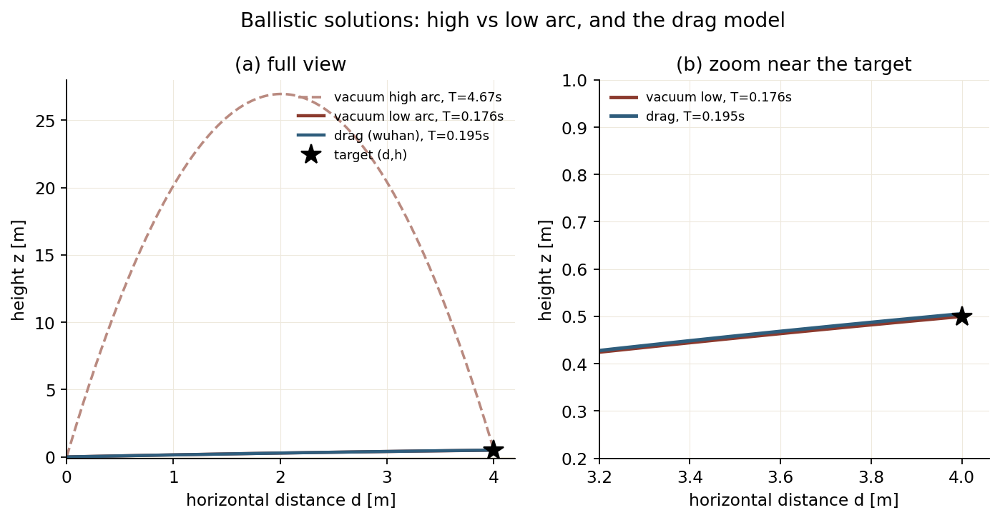
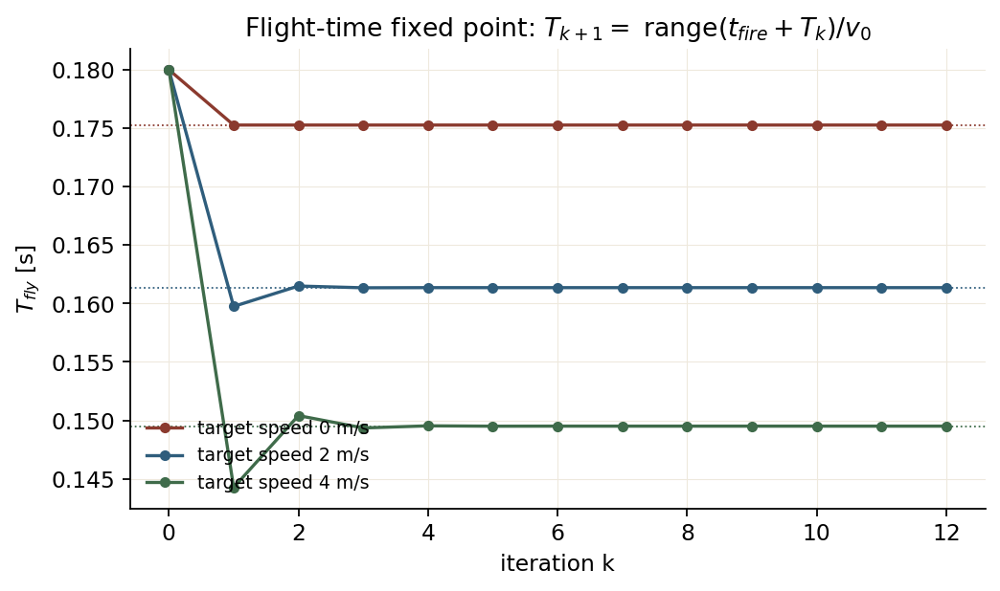

Lesson 0006 · 深入线
预测出“目标在命中时刻的位置”还不够：子弹要飞一段时间。这一节推导抛物线/阻力弹道，并解释为什么飞行时间是一个不动点。
A,B,C；解释 T_fly 不动点为什么收敛；估算“只算一次”会差多少。
目标在水平距离 d、高差 h，初速 v0，重力 g。设发射角 θ，飞行时间：
T = d / (v0 cosθ)
竖直方向：
h = v0 sinθ · T - ½ g T² = d tanθ - ½ g d² (1+tan²θ) / v0²
令 u=tanθ，整理成：
(g d² / 2v0²) u² - d u + (g d² / 2v0² + h) = 0 a = g d² / (2v0²) b = -d c = a + h u = (-b ± √(b²-4ac)) / (2a)
两个解：高弧（+√）和低弧（-√）。低弧飞行时间短、弹道平，通常更适合自瞄；高弧在近距离可能打不高，远距离又飞得久。sp/SHtech 取短时间（低弧），wuhan 先取高弧、无效再低弧。

(d,h)=(4,0.5)：高弧 T=4.67 s，低弧 T=0.176 s，wuhan 的阻力模型 T=0.195 s。右图放大目标附近，阻力让弹道略微“抬高”才能落到同一点。图由 assets/make_course_figures.py 生成。水平方向按二次阻力，竖直方向只受重力：
x(t) = ln(1 + k v0 cosθ · t) / k z(t) = v0 sinθ · t - ½ g t²
由 x(T)=d：
T = (e^{kd} - 1) / (k v0 cosθ)
代入 z(T)=h，令 u=tanθ：
A = (e^{kd} - 1)/k
C = A/v0
B = ½ g C²
B u² - A u + (B + h) = 0
T = (e^{kd} - 1) / (k v0 cosθ)
这个模型只把阻力加在水平方向，竖直方向仍是真空，是一个工程近似；k 通常很小（0.001 量级），远距离才明显。
命中时刻：
t_hit = t_now + t_latency + T_fly T_fly = range( p_target(t_hit) ) / (v0 cosθ)
T_fly 出现在等式两边，所以是不动点。迭代：
T_0 = range(t_now + latency) / v0
for k = 0..N:
p_k = p_target(t_now + latency + T_k)
T_{k+1} = range(p_k) / (v0 cosθ_k)

T_fly 的迭代轨迹。2–3 次就基本收敛；4 m/s 时有一次轻微过冲，但仍在 1 ms 内。图由 assets/make_course_figures.py 生成。收敛速度取决于目标径向速度与弹速之比。弹速 23 m/s、目标 4 m/s，比值约 0.17，迭代 2–3 次就够；sp/wuhan 用 10 次是留余量。
SHtech 的装甲板模型：
T = cal_fly_time(p_now) aim = p_now + v · (latency + T)
它假设“飞行时间内目标匀速”，但没有把 aim 的新位置再代回去更新 T。误差量级：
ΔT ≈ (v_target · T) / v0 Δaim ≈ v_target · ΔT
目标 4 m/s、T=0.15 s、v0=23：ΔT≈0.026 s，Δaim≈10 cm。对 13.5 cm 的装甲板，这已经是一个不可忽略的偏差。所以“一次性”不是等价替换，而是用精度换计算量。
sp: t_fire = t_frame + (now - t_frame) + delay wuhan: t_hit = now + T_fly + prediction_delay SHtech: total = (now - t_frame) + comm_latency + T_fly
三套代码都没有把“云台从当前角度转到目标角度”的时间算进 t_hit，而是通过“轨迹跟踪 + 开火门控”保证开枪时云台已经到位。这是控制层和预测层的分工：预测层给“命中点”，控制层判断“现在能不能打”。
wuhan/SHtech 都会采样一条参考轨迹：
for t in [-H/2·dt, ..., +H/2·dt]:
p_t = target.predict(t)
cp(t) = gimbal_angle_to_hit(p_t) # 若在 t 时刻开火，云台该指哪
这条轨迹的横轴是“开火时刻”，纵轴是“对应的云台角”。MPC 跟踪它，等价于“让云台提前走到未来某个开火时刻所需的角”，从而在连续射击时保持超前。中心时刻取 now 或 t_hit，取决于实现。
1. 真空弹道的两个解分别对应？
2. 为什么 T_fly 要迭代？
3. “只算一次”的提前量误差主要来自？